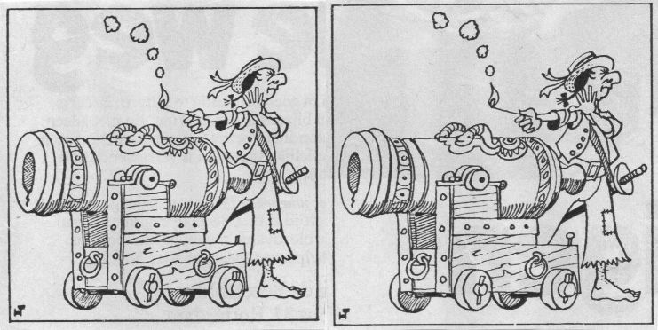
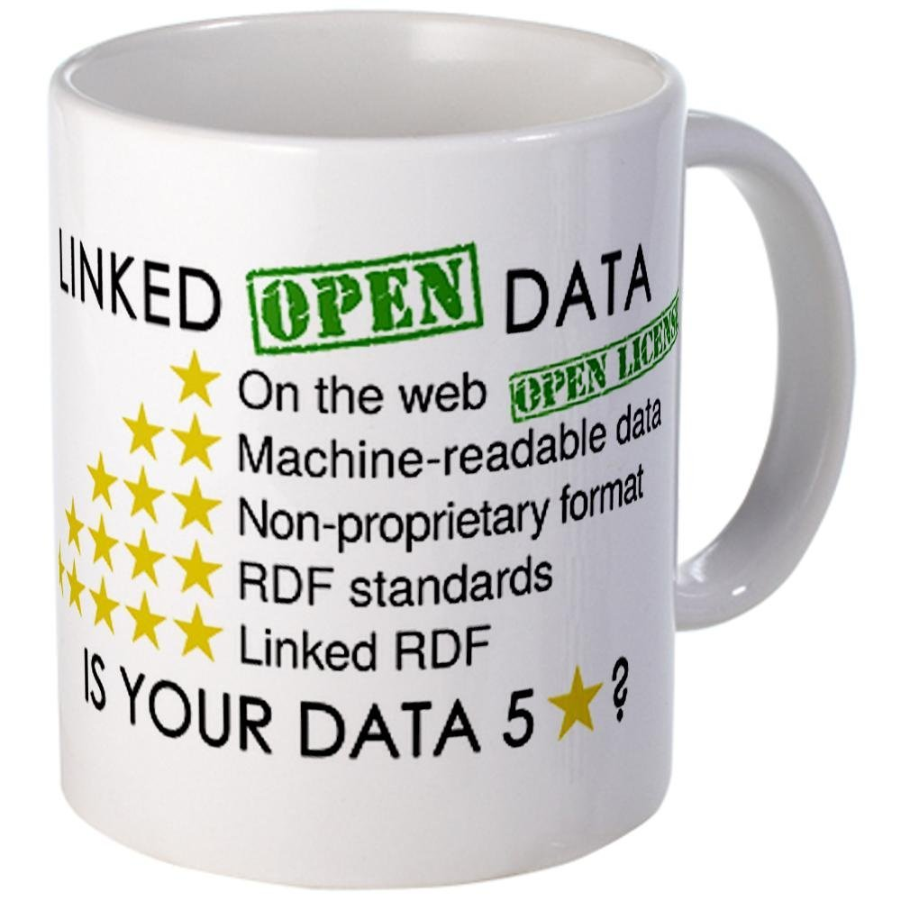
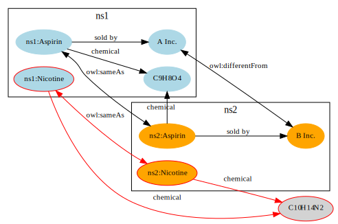
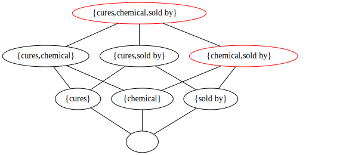

A Contextualized Semantics for owl:sameAs
June 2nd, 2016, ESWC
Wouter Beek (w.g.j.beek@vu.nl), Stefan Schlobach, Frank van Harmelen
Are these owl:sameAs?

Two types of meaning
Formal meaning

DL, OWL, Model Theory
Social meaning

Linked Data, SKOS, Schema.org
owl:sameAs is ‘torn between’
formal and social meaning
Stringently defined in model theory,
but casually used in practice.
owl:sameAs has 2 meanings
Formal meaning
$$a = b \,\longleftrightarrow\, (\forall P)(Pa = Pb)$$
OWL 2 specification, 2012Social meaning
“Include links to other URIs, to discover more things.”
Tim Berners-Lee, 4th Linked Data principle, 2006 Example
How formal meaning and social meaning collide
Existing solutions
Use weaker alternatives
(e.g. relatedness)
Everything is related to everything.
SKOS exactMatch indicates a high degree of confidence that two concepts can be used interchangeably across a wide range of information retrieval applicationsSKOS specification, 2009
Use domain-specific identity relations
“the same chemical” (ex:sameChemical)
“the same product” (ex:sameProduct)
bbc:sameAs
bbc:sameAs
owl:sameAs
?
Change modeling practice
Adding an owl:sameAs link requires approval from the authority that is being linked to.
Our solution
(See the paper for details)
Preserve equivalence properties
The identity relation is the smallest equivalence relation.
Every equivalence relation is also an identity relation, but w.r.t. a subset of the properties.
If A and B have the same income, I cannot infer identity.
But if I am reasoning about income groups, then they are identical.
Identity subrelations that are also equivalence relations can, in some contexts, be used i.o. the identity relation.
Not the same sui generis

But... the same chemical compound ($=_{\{\text{chemical}\}}$)
The same chemical compound ($=_{\{\text{chemical}\}}$)
〈ns1:Aspirin,ns2:Aspirin〉and 〈ns1:Nicotine,ns2:Nicotine〉 are the same according to the same criteria.
Lattice of identity subrelations
Identity context: A consistent collection of identity subrelations from the identity lattice
Pros & cons
- We do not change the schema
- We do not change the data
- We do not lose equivalence properties
- Consistently reason over inconsistent data
- Very few things are the same sui generis
- Highly non-monotonic: identity subrelations change when statements are added/removed
- Computationally challenging (parallel FCA computation)
Questions?
Formal meaning
$$a = b \,\longleftrightarrow\, (\forall P)(Pa = Pb)$$